Last time your pass check printed 1 or 0
bool passed = average >= 50;
cout << passed; // prints 1 or 0 — not very friendlyA bool is a yes/no. But the program still did the same thing either way. Today we make it act on that answer.
yes → print "PASS"
no → print "FAIL"
The if statement
Run some code — but only when a condition is true.
A condition, then a block
if (average >= 50) {
cout << "PASS";
}Read it: "if this is true, run what's in the braces." If it's false, C++ just skips the block.
Your first decision
Run it. Then change the mark to 40 and run again — watch the message disappear. (Input: 72)
else, and the ladder
Give the "no" path something to do — and chain many choices.

else — the other pathif … else … — always one or the other
if (mark >= 50) {
cout << "PASS";
} else {
cout << "FAIL";
}The else if ladder — checked top to bottom
if (score >= 90) {
grade = 'A';
} else if (score >= 75) {
grade = 'B';
} else if (score >= 50) {
grade = 'C';
} else {
grade = 'F';
}Top to bottom
C++ tries each test in order and stops at the first true one.
Order matters!
Put the strictest test first. 95 is ≥90 and ≥75 — but only 'A' runs.
else = catch-all
If nothing matched, the final else handles it.
Trace the ladder — which grade?
Run the ladder above in your head for each score. Write the letter it lands on.
Check your four
The grade classifier
The real tool Group B's gradebook needs. Run it, then feed it 95, 60, 30. (Input: 72)
What does this print for score = 95?
if (score >= 50) cout << "C";
else if (score >= 75) cout << "B";
else if (score >= 90) cout << "A";Careful — look at the order of the tests.
switch — pick a case by value
switch (grade) {
case 'A': cout << "Excellent"; break;
case 'B': cout << "Good"; break;
case 'C': cout << "Passed"; break;
default: cout << "Try again";
}When to use it
One variable, compared to several exact values — menus, grades, commands.
The break trap
Forget break and it "falls through" into the next case. The #1 switch bug.
default
The catch-all, like the final else.
No break! What prints for 'A'?
switch (grade) {
case 'A': cout << "Excellent";
case 'B': cout << "Good";
default: cout << "!";
}Build it: smart grade report
Turn a score into a grade AND a message — your real classifier.

A message for each gradeYour grade report
Starter reads the score & sets the grade. You add the switch message and the range guard. (Input: 82)
How the report works
if (score < 0 || score > 100) {
cout << "Invalid score"; return 0; // guard FIRST
}
char grade;
if (score >= 90) grade = 'A';
else if (score >= 75) grade = 'B';
else if (score >= 50) grade = 'C';
else grade = 'F';
cout << "Score: " << score << " Grade: " << grade << endl;
switch (grade) {
case 'A': cout << "Outstanding!"; break;
case 'B': cout << "Well done"; break;
case 'C': cout << "You passed"; break;
default: cout << "Keep going";
}Guard first, return early
Reject bad input before any grading runs.
Ladder sets the grade
Strictest test on top, catch-all else at the bottom.
switch speaks to the user
One message per grade — every case has its break.
What you can do now
Branch
if / else / else if — run different code for different data, checked top to bottom.
Switch
Pick one of many fixed values cleanly — with a break after each case.
Today's keywords — click any one for a reminder
if
Run if true
else
Otherwise
else if
Next test
switch
Pick a case
break
Stop the case
default
Catch-all
condition
true / false test
boundary
The edge case
Practice (15–20 min)
Leap year checker
Read a year; print "Leap" if divisible by 4 (and your rule) — great if + % practice.
Day of the week
Read a number 1–7; use a switch to print the day name (default: "Invalid").
Upgrade your classifier
Add A+ and A- bands to your grade report — Group B will reuse it.
Lecture 5 — Loops
Today you chose a path once. Next time you'll repeat work — grade a whole class of students, not just one, without copying code.
- while and for — do it again and again
- Loop over every student's score
- Sum, average, and find the top mark